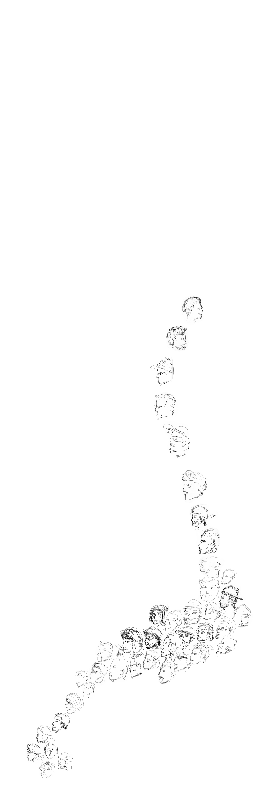

FREEWAY GLIMPSES
Have you ever wondered about who you are sharing the road with everyday when you are on your way to work or school? Is there a pattern to be found in the vast amount of commuters? In this map I investigate the people and patterns I see on my way to San Francicso on a typical weekday morning.
